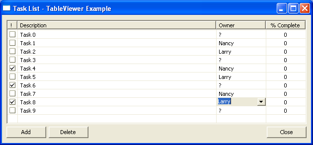

| Eclipse Corner Article |

Summary
The JFace API provides several classes that can be used to build editable table views. In this article, we present a fairly extensive example that exercises the JFace and SWT classes needed to implement a table with cell editors for check-boxes, free text and combo-boxes. We also show how to package and deliver the classes into a stand-alone (non-Eclipse) Java application.By Laurent Gauthier, Mirasol Op'nWorks, lgauthier@opnworks.com
July 3, 2003
Users of business software take many things for granted from modern GUI applications. Their reference consists of office automation software such as word processing and spreadsheet applications and they rightly expect other programs to exhibit similar look and feel. They certainly do not want to hear that because the application was written using this or that technology, they should not expect the same behavior from the application as the one they are used to. They do not understand, do not want to understand and should not even have to be confronted with such an issue. The Eclipse team and more specifically, the folks who worked on the SWT and JFace APIs fully understand this and have done a tremendous job in providing Java developers with a toolset that can be used to quickly build robust native applications. In this article, we examine a small part of the SWT/JFace API, namely the constructs that allow us to program a table with editable cells and sortable columns.
The example we use for this article is a task list editor. It is by no means a truly useful application and the GUI design was driven essentially by the need to provide examples of the use of cell editors. The code presented here can be a useful starting point for projects that need the functionality of a table view with editable cells.
The project and code described herein was designed and implemented as a standalone SWT/JFace application. In other words, it was meant to run outside the Eclipse environment per say although it has dependencies on some core Eclipse APIs. I have wrapped the main class in a plug-in so that it can be conveniently installed into Eclipse. This also shows how one can build an application that is meant to run both as a standalone Java application and as an Eclipse extension. But that could be the subject of another article.
 The reader can install the
executable and source code by extracting the contents of the TableViewerExamplePlugin.zip
file into the plugins directory of an Eclipse 2.1 installation and start
(or restart) Eclipse.
The reader can install the
executable and source code by extracting the contents of the TableViewerExamplePlugin.zip
file into the plugins directory of an Eclipse 2.1 installation and start
(or restart) Eclipse.
 To run the example,
simply open the sample view through the following menu item: Window -> Show
View -> Other... -> Examples -> TableViewerExample view. You may also
want to import the Java source code into an Eclipse project. To run the example
as a standalone Java application inside the Eclipse workbench, simply run the
To run the example,
simply open the sample view through the following menu item: Window -> Show
View -> Other... -> Examples -> TableViewerExample view. You may also
want to import the Java source code into an Eclipse project. To run the example
as a standalone Java application inside the Eclipse workbench, simply run the TableViewerExample
class.
A Task List editor window is shown below. The first column is used to indicate whether the task is completed or not. The other columns and buttons are self explanatory. The user can toggle the "completed" cell, edit in place the "Description" and "% Complete" cells, change the "Owner" cell through the use of a combo box, change the sort order by clicking on a column header and add and delete tasks by clicking on the corresponding button.

The example uses two simple classes that play the role of the model in our
MVC design. The ExampleTask is a simple business object
representing a task with getters and setters for the following properties:
private boolean completed = false;
private String description = "";
private String owner = "?";
private int percentComplete = 0;
The ExampleTaskList is used to hold, as the name implies, a
collection of ExampleTask instances. It also knows about the list
of possible task owners.
Here we get into the substance of our subject matter: how do we go about building and implementing the view and behavior described above? We do this with a combination of SWT and JFace constructs. SWT provides an interface to the native platform widgetry while JFace provides a high-level abstraction to build rich GUIs. In other words, we could implement the example by using only SWT objects but that would represent much more work and more complicated code.
So lets start by examining our TableViewerExample class. It
inherits from Object and the main() method simply
creates a new instance, calls the open() method on the window and
runs until the user tells the window to close itself.
/**
* Main method to launch the window
*/
public static void main(String[] args) {
 Shell shell = new Shell();
shell.setText("Task List - TableViewer Example");
// Set layout for shell
GridLayout layout = new GridLayout();
shell.setLayout(layout);
// Create a composite to hold the children
Shell shell = new Shell();
shell.setText("Task List - TableViewer Example");
// Set layout for shell
GridLayout layout = new GridLayout();
shell.setLayout(layout);
// Create a composite to hold the children
 Composite composite = new Composite(shell, SWT.NONE);
Composite composite = new Composite(shell, SWT.NONE);
 TableViewerExample tableViewerExample = new TableViewerExample(composite);
// Open the shell and run until a close event is detected
shell.open();
tableViewerExample.run(shell);
}
TableViewerExample tableViewerExample = new TableViewerExample(composite);
// Open the shell and run until a close event is detected
shell.open();
tableViewerExample.run(shell);
}
We first  create and configure a SWT
create and configure a SWT Shell object. Then,  we create a
we create a Composite to hold the widgets (table and buttons) and  instantiate our class passing the composite to the constructor. We could have
done things differently but passing the composite to the constructor makes it
easy to wrap our class in an Eclipse view for example.
instantiate our class passing the composite to the constructor. We could have
done things differently but passing the composite to the constructor makes it
easy to wrap our class in an Eclipse view for example.
Adding widgets to the composite is done in the addChildControls()
method. The more interesting part of this method is in the following code fragment:
// Create the table
We first  create a
create a org.eclipse.swt.widgets.Table and then  create a
create a org.eclipse.jface.viewers.TableViewer on that table. We
then  set the content provider, label provider and input for the
set the content provider, label provider and input for the TableViewer.
We will come back to these later. Let's first look at the createTable()
method. It starts by instantiating a Table object and sets its
parent, style and layout attributes. It then creates each of the four columns in
turn. As an example, the second column is created with the following fragment:
// 2nd column with task Description
Here, we  create a
create a TableColumn object for the Table, set some of
its attributes and  add a selection listener that sets the sorter object for the
add a selection listener that sets the sorter object for the TableViewer
object when the column header is clicked. We will look at column sorting later.
The rest of the method is concerned with setting up the other columns using
the same approach. The creation of the TableViewer is also of
particular interest to us. The method is outlined below (less important code was
omitted):
/**
* Create the TableViewer
*/
private void createTableViewer() {
tableViewer = new TableViewer(table);
tableViewer.setUseHashlookup(true);
tableViewer.setColumnProperties(columnNames);
// Create the cell editors
CellEditor[] editors = new CellEditor[columnNames.length];
// Column 1 : Completed (Checkbox)
 editors[0] = new CheckboxCellEditor(table);
// Column 2 : Description (Free text)
TextCellEditor textEditor = new TextCellEditor(table);
((Text) textEditor.getControl()).setTextLimit(60);
editors[1] = textEditor;
// Column 3 : Owner (Combo Box)
editors[2] = new ComboBoxCellEditor(table, taskList.getOwners(),
SWT.READ_ONLY);
// Column 4 : Percent complete (Text with digits only)
textEditor = new TextCellEditor(table);
((Text) textEditor.getControl()).addVerifyListener(
editors[0] = new CheckboxCellEditor(table);
// Column 2 : Description (Free text)
TextCellEditor textEditor = new TextCellEditor(table);
((Text) textEditor.getControl()).setTextLimit(60);
editors[1] = textEditor;
// Column 3 : Owner (Combo Box)
editors[2] = new ComboBoxCellEditor(table, taskList.getOwners(),
SWT.READ_ONLY);
// Column 4 : Percent complete (Text with digits only)
textEditor = new TextCellEditor(table);
((Text) textEditor.getControl()).addVerifyListener(
 new VerifyListener() {
public void verifyText(VerifyEvent e) {
e.doit = "0123456789".indexOf(e.text) >= 0;
}
});
editors[3] = textEditor;
// Assign the cell editors to the viewer
new VerifyListener() {
public void verifyText(VerifyEvent e) {
e.doit = "0123456789".indexOf(e.text) >= 0;
}
});
editors[3] = textEditor;
// Assign the cell editors to the viewer
 tableViewer.setCellEditors(editors);
// Set the cell modifier for the viewer
tableViewer.setCellModifier(new ExampleCellModifier(this));
// Set the default sorter for the viewer
tableViewer.setCellEditors(editors);
// Set the cell modifier for the viewer
tableViewer.setCellModifier(new ExampleCellModifier(this));
// Set the default sorter for the viewer
 tableViewer.setSorter(
new ExampleTaskSorter(ExampleTaskSorter.DESCRIPTION));
}
tableViewer.setSorter(
new ExampleTaskSorter(ExampleTaskSorter.DESCRIPTION));
}
We  first
construct the
first
construct the TableViewer object, passing along our Table
instance since a TableViewer always operates on a table. We then
 set the column properties that will be used in callbacks to recognize the column
on which we will want to operate. We
set the column properties that will be used in callbacks to recognize the column
on which we will want to operate. We  initialize an array of
initialize an array of CellEditor objects and we  build editors for each column. For the checkbox editor, we do not need to do
anything special. For column 2, we set the text length limit of the free text
editor while for column 3, we specify the items used in the combo box editor.
We obtain these from our
build editors for each column. For the checkbox editor, we do not need to do
anything special. For column 2, we set the text length limit of the free text
editor while for column 3, we specify the items used in the combo box editor.
We obtain these from our ExampleTaskList object. In the case of
column 4, we  add a validator (a
add a validator (a VerifyListener) to makes sure we accept only
digits.
We finish setting up our TableViewer by  setting it's cellEditors and cellModifier properties and by
setting it's cellEditors and cellModifier properties and by  specifying the default sorter. The
specifying the default sorter. The ExampleCellModifier is described
in detail below.
Coming back to the TableViewerExample.open() method, we now have
a TableViewer instance for which we can set the content and label
providers. The content provider is implemented as an inner class of the TableViewerExample
class. This allows us to implement both the IStructuredContentProvider
and the ITaskListViewer without "polluting", so to speak,
our model with JFace dependencies. This class does several things. It handles
the  inputChanged()
inputChanged()  dispose()
dispose() relays the
relays the getElements() request to our model (a TaskList
object) and packages the result into an array of Object instances.
Finally, it implements the  addTask()
addTask() removeTask()
removeTask() updateTasks()
updateTasks()ITaskListViewer. The
general principle here is that one should not assume that the model
"feeds" a single view. Hence, views should register and deregister
their interest in model changes (in our case, task additions, removals and
changes).
/**
* InnerClass that acts as a proxy for the ExampleTaskList
* providing content for the Table. It implements the ITaskListViewer
* interface since it must register changeListeners with the
* ExampleTaskList
*/
class ExampleContentProvider
implements IStructuredContentProvider, ITaskListViewer {
public void inputChanged(Viewer v, Object oldInput, Object newInput) {
if (newInput != null)
((ExampleTaskList) newInput).addChangeListener(this);
if (oldInput != null)
((ExampleTaskList) oldInput).removeChangeListener(this);
}
public void dispose() {
taskList.removeChangeListener(this);
}
// Return the tasks as an array of Objects
public Object[] getElements(Object parent) {
return taskList.getTasks().toArray();
}
/* (non-Javadoc)
* @see ITaskListViewer#addTask(ExampleTask)
*/
public void addTask(ExampleTask task) {
tableViewer.add(task);
}
/* (non-Javadoc)
* @see ITaskListViewer#removeTask(ExampleTask)
*/
public void removeTask(ExampleTask task) {
tableViewer.remove(task);
}
/* (non-Javadoc)
* @see ITaskListViewer#updateTask(ExampleTask)
*/
public void updateTask(ExampleTask task) {
tableViewer.update(task, null);
}
}
For the label provider, we chose to use a top-level class (the ExampleLabelProvider
class). An org.eclipse.jface.viewers.ITableLabelProvider must
implement two methods:  getColumnText()
getColumnText()
getColumnImage(). As the names imply, these methods must return the label
text and image for a given column of a given element and are implemented using
the following code:
public String getColumnText(Object element, int columnIndex) { String result = ""; ExampleTask task = (ExampleTask) element; switch (columnIndex) { case 0: // COMPLETED_COLUMN break; case 1 : result = task.getDescription(); break; case 2 : result = task.getOwner(); break; ...code omitted... } return result; }public Image getColumnImage(Object element, int columnIndex) { return (columnIndex == 0) ? // COMPLETED_COLUMN? getImage(((ExampleTask) element).isCompleted()) : null; }
These methods are called by the TableViewer whenever a table element
needs to be refreshed. Our ITableLabelProvider extends org.eclipse.jface.viewers.LabelProvider.
This way, we benefit from the behavior defined in the superclass. Internally,
our class manages an image registry (for the checkboxes) so we had to put in
place the mechanics to load and manage instances of org.eclipse.jface.resource.ImageDescriptor
and org.eclipse.jface.resource.ImageRegistry. The details of this
can be assessed by looking at the source code for the class. In SWT, platform
resources such as images and fonts must be disposed of when the application
exits. However, an ImageRegistry owns all of the image objects
registered with it and automatically disposes of them when the SWT Display is
disposed so we do not need to explicitly do so.
We now have in place all the parts to display our task list in a table. What
we need to add is the componentry to support cell editing. For this, we
implement an org.eclipse.jface.viewers.ICellModifier. The later
must define the canModify(), getValue() and modify()
methods. The first one returns a boolean given an element (a table
row) and a column name. The second method returns a cell value (given an element
and a column name). Part of its implementation is shown below:
public Object getValue(Object element, String property) {
// Find the index of the column
First, 
Second, 
element into a ExampleTask
object so we can directly address its interface. Finally, 
switch to the proper block of code based on the column index.
Cases 0 and 1 are self explanatory. In 
stringValue
to one of the choices and return an Integer representing the
current selection.
The modify() method is somewhat symmetrical to the previous one.
It is where the actual modification of the ExampleTask takes place.
public void modify(Object element, String property, Object value) {
// Find the index of the column
...code omitted...
switch (columnIndex) {
As an example, for the 
convert the passed value into a boolean
and use the resulting value as an argument to the ExampleTask.setCompleted()
method. We implement an equivalent behavior for each column. The 
TableViewerExample for its model (an ExampleTaskList)
and notifies the model that a given task was changed. The model in turn notifies
this change to each of its registered views.
Editing existing tasks is useful but we also want to add and remove tasks using the GUI. The following code attaches the proper behavior to the "Add" button (very similar code is used for the "Delete" button):
// Create and configure the "Add" buttonButton add = new Button(parent, SWT.PUSH | SWT.CENTER); add.setText("Add"); GridData gridData = new GridData (GridData.HORIZONTAL_ALIGN_BEGINNING); gridData.widthHint = 80; add.setLayoutData(gridData);add.addSelectionListener(new SelectionAdapter() { // Add a task to the ExampleTaskList and refresh the view public void widgetSelected(SelectionEvent e) { taskList.addTask(); } });
In the above code fragment, we 

addTask()
method. This later method notifies all its active views that a task was added
using the following implementation:
public void addTask() {
ExampleTask task = new ExampleTask("New task");
tasks.add(tasks.size(), task);
Iterator iterator = changeListeners.iterator();
while (iterator.hasNext())
((ITaskListViewer) iterator.next()).addTask(task);
}
This pretty much closes the loop for cell and table editing. Through
relatively simple implementations of ICellModifier, ITableLabelProvider
and IStructuredContentProvider, we have a sophisticated and robust
GUI supporting in-place edition of table cells and a viewer that will always
reflect the current state of the model.
As hinted above, adding column-wise sorting is almost trivial. To achieve
this, we extend the org.eclipse.jface.viewers.ViewerSorter class
and override the compare() public method with one that knows how to
compare tasks based on its preset criteria. We leave it up to the reader to look
up the class implementation. Specifying a sorter for our table viewer is done
using the following pattern:
tableViewer.setSorter(
new ExampleTaskSorter(ExampleTaskSorter.PERCENT_COMPLETE))
We construct a sorter using one of its exposed criteria and use the result as
an argument to the TableViewer.setSorter() method. On selection of
a column header, we tell the TableViewer to use a different sorter
and table lines get resorted "automagically"!
This table viewer/editor is all very nice but how and where can I make use of it in applications? One answer is, obviously, within an Eclipse plugin. But more than that, as others have described, SWT and JFace can be used to build applications that live outside the Eclipse framework. This is actually very simple: One simply has to put the following files in the same folder: TableViewerExample.jar (contains the application class and image files), swt.jar, jface.jar, runtime.jar and boot.jar. In addition, in a Win32 environment, you will need the swt-win32-2133.dll file which contains the "glue" allowing Java objects to communicate with Windows native widgets and APIs. On other platforms, the Java to native code will be found in a different file so you would need to somehow make sure your Java VM can find it.
 On Windows, to launch
the TableViewerExample application, you need to execute the following command:
On Windows, to launch
the TableViewerExample application, you need to execute the following command:
java -classpath TableViewerExample.jar;swt.jar;jface.jar;runtime.jar;boot.jar -Djava.library.path=. com.opnworks.tableviewer.example.TableViewerExample
You would typically but such a command inside a .bat file. You can also achieve a clickable icon result on Windows and on other platforms by using a Java aware packager/installer application, some of which are free to use even for commercial purposes. With such a packaging, users will never know they are using Java technology! Not that there is anything to be shy about, it is just that most users really don't care and why should they?
With the popularity of the web, it seems people and programmers have been
shying away from building GUI applications. In addition, Java programmers and
software development managers are often convinced that Java does not cut it on
the client and that it cannot be used to build "native" applications.
You can convince them of the contrary by rapidly prototyping and packaging a
native application using the SWT and JFace APIs.